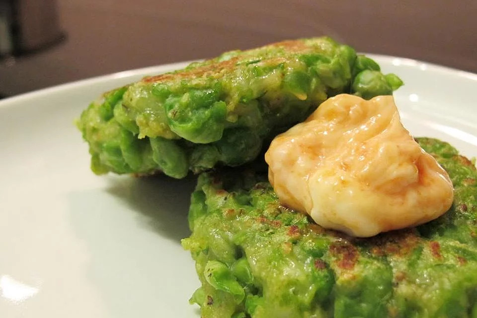

Home
Green Pea Patties

Healthy vegan appetizer, or main dish.
Preparation time: around 20 minutes
Cooking time: around 30 minutes
INGREDIENTS:
- salt
- 250g - green peas
- 1/2 cup (125g) - plain flour
- 2 - tablespoons soy cream
- 100g - vegan parmesan cheese
- vegan substitute for 1 egg
- 1 - teaspoon baking powder
- freshly ground black pepper
- 2 - tablespoons olive oil
- your favorite dipping sauce, to serve
INSTRUCTION
- Cook the peas in the boiling salted water for 5 minutes,drain the peas and put in a bowl. Mash the peas
- Add the flour, soy cream, cheese, egg replacer, baking powder into bowl with peas, salt and pepper to teste. Mix well.
- Create patties in about 4-5 cm size.
- Fry the patties for about 4-5 minutes on over medium heat each side, until golden brown.
- Serve with dipping sauce, bread or burgers style
Bon Appétit